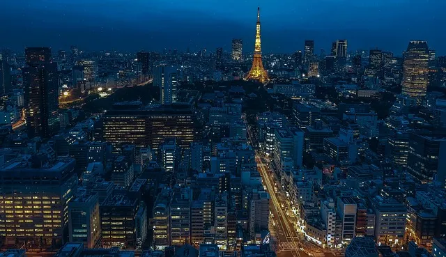
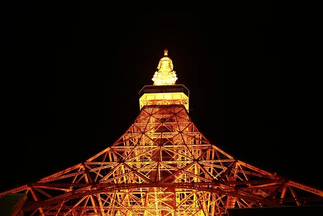
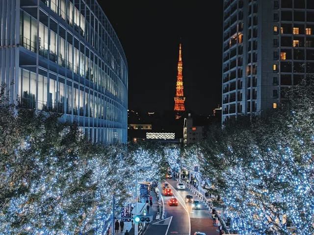
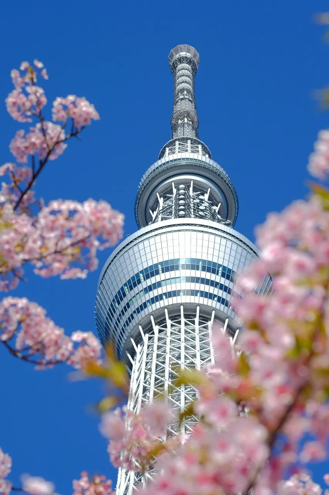
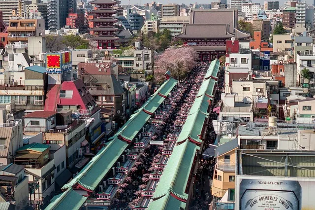
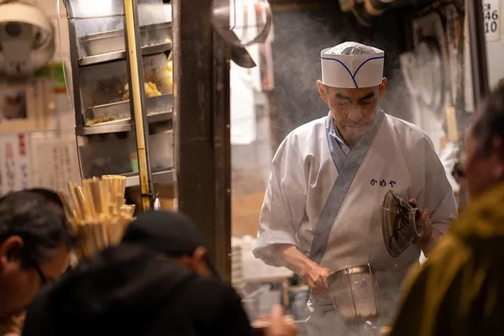
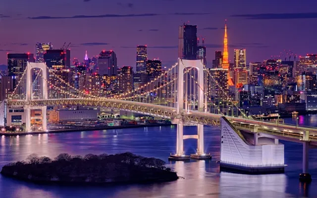
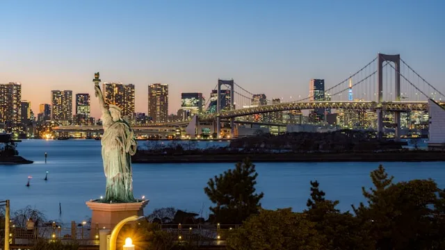
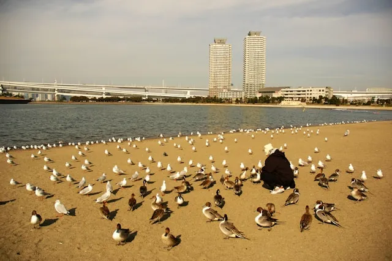

東京タワー、スカイツリー、お台場へ！
昭和の開業以来、温かみのある姿で親しまれ続けている東京タワーは、都市の景観に溶け込むノスタルジックな魅力が特徴です。対して、高さ634メートルを誇る東京スカイツリーは、最先端の技術が集結した世界一の自立式電波塔であり、圧倒的なスケールの空中散歩や巨大商業施設でのショッピングが楽しめます。そして、海風を感じられるお台場は、美しいレインボーブリッジや自由の女神像、近代的な街並みが調和する開放的なリゾート空間です。それぞれ異なる表情を持つこれら3ヶ所は、東京観光を語る上で絶対に外せない、個性豊かな魅力にあふれる定番スポットとなっています。

東京タワーを中心に、周辺の魅力的なスポットを巡るおすすめルートです。高さ332mの展望台から都心が一望できる東京タワーを訪れた後は、豊かな自然と歴史を感じる芝公園や増上寺を散策。洗練されたショップが集まる麻布台ヒルズへも徒歩圏内で楽しめます。



下町情緒が残る押上エリア。ソラマチでのショッピングやプラネタリウムなど、一日中遊び尽くせます。 隅田川の風を感じながら浅草への散策も快適。伝統とモダンが交差する、東京のいまを感じる人気街区。



東京湾の爽やかな海風を感じられる人気のベイエリア。ショッピングモールや室内型テーマパーク、映画館が集まり一日中楽しめます。自由の女神像越しに望むレインボーブリッジや、美しい夜景も見どころのスポットです。

